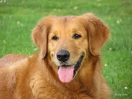
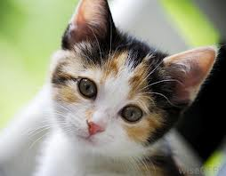
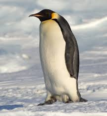
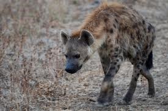
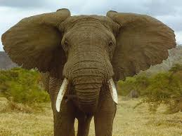
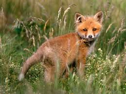
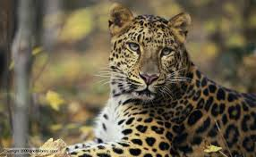

כלב הוא שמו היומיומי של כלב הבית (שם מדעי: Canis lupus familiaris), תת-מין של הזאב המצוי (Canis lupus), ממשפחת הכלביים, מסדרת היונקים הטורפים.
הכלבים התפתחו מהזאבים. תוחלת החיים שלהם בדרך כלל היא 10–12 שנים, אך כלבים מסוימים כמו למשל כלב כנעני, סכיפרקה וגזעים נוספים של כלבי ציד יכולים לחיות גם בין 18 ל-22 שנים. ככלל, כלבים קטנים מאריכים חיים יותר מכלבים גדולים.

חתול הבית (שם מדעי: Felis silvestris catus) הוא יונק טורף מבוית, מהסוג חתול ממשפחת החתוליים. החתול נפוץ בכל יבשות העולם מלבד באנטארקטיקה. משערים כי מוצאו מחתול הבר

הפינגווינים הם יצורי יבשה ופעילותם העיקרית במים היא חיפוש מזון. הפינגווינים ניזונים מדגים ומסרטנים אותם הם צדים. ביבשה כמעט שאינם תרים אחר מזון. הם תלויים באוויר האטמוספירי לנשימה ובצלילתם במים הם אוטמים את נחיריהם ומשתמשים במלאי האוויר המצוי בריאותיהם עד אשר אוזל החמצן כמעט כליל ואז שבים אל פני המים כדי לשאוף אוויר מחדש.

צבוע (שם מדעי: Hyaena) הוא סוג של דמויי חתול ממשפחת הצבועיים החיים בערבות ואזורים תת-מדבריים.
אלו טורפים חזקים ועמידים הניזונים בעיקר מנבלות ויצורים חלשים. נפוצים באפריקה והמזרח התיכון עד הודו.

פיל (שם מדעי: Elephas) הוא סוג במשפחת הפיליים הכולל כיום מין אחד בלבד, פיל אסייתי. 8 מינים נוספים שנכללו בסוג זה נכחדו, ואף הפיל האסייתי מצוי בסכנת הכחדה. בעבר סווגו בסוג פיל מינים נוספים בגדלים גמדיים עד גדלים ענקיים שהיו קרובים לממותה, אולם הם הועברו לסוג נפרד - פליאולוקסודון. הסוג פיל תואר מדעית לראשונה בשנת 1758 על ידי קארל לינאוס.

שוּעל (שם מדעי: Vulpini) הוא שבט המכיל מספר סוגים של יונקים טורפים במשפחת הכלביים. השועלים מאופיינים בחוטמם הארוך והצר, בזנבם הפרוותי ובמבנה גופם הקטן-בינוני יחסית לאחרים במשפחת הכלביים

נמר (שם מדעי: Panthera pardus) הוא מין במשפחת החתוליים בסוג פנתר. הנמר הוא הפנתר הקטן בסוגו. הנמר ניזון בעיקר מיונקים בגודל בינוני, מעופות ומזוחלים. תוחלת חייו היא כ-20 שנה, והוא נפוץ באפריקה ובאסיה.